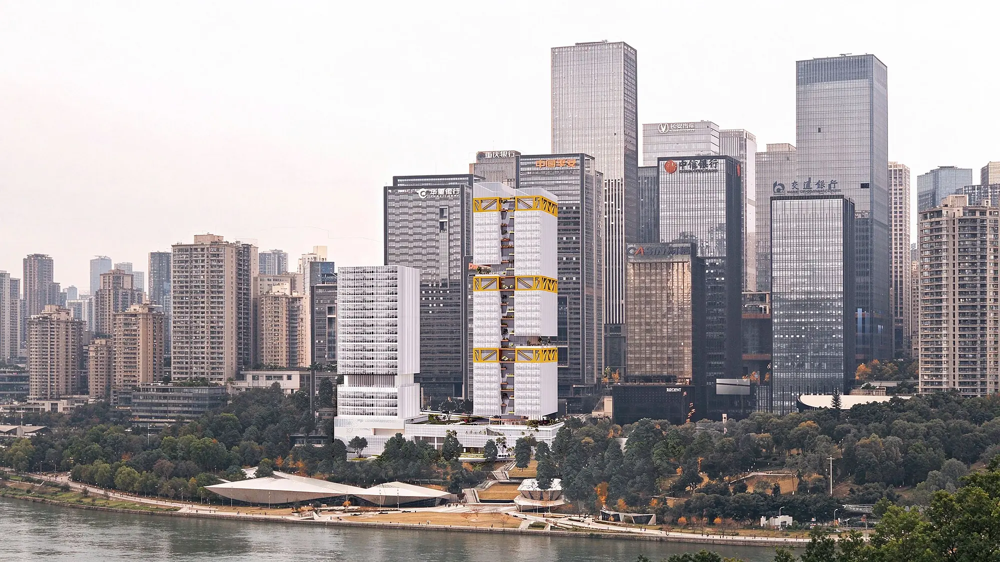
01高层办公建筑设计
叠浮绿境
Floating Green Terraces
山地滨江超高层办公建筑设计
- 地点
- 重庆市两江新区
- 面积
- 84,784 ㎡
- 年份
- 2026.01
- 高度
- 132 m
- 团队
- 杨官运、王一凡
- 来源
- 大四上课程作业
- 指导
- 张海滨
- 参与
- 前期分析、方案构思、3D 建模、塔楼工程图、后期分析、渲染、后期处理
三组被钢桁架托起的「空中盒子」——盒子之间是花园，盒子下方还给城市一条通往江岸的路。
设计挑战
场地位于重庆两江新区核心滨江地段，周边观音桥、解放碑、沙坪坝等商圈环抱，城市界面密集。东高西低的台地高差约 7 米、南北向高差约 15 米，江景视线被周边高层封堵，地面层与滨江公共空间之间是断的。高密度城市里，建筑与江景、与公共空间的连接怎么重新建立，是设计的核心命题。
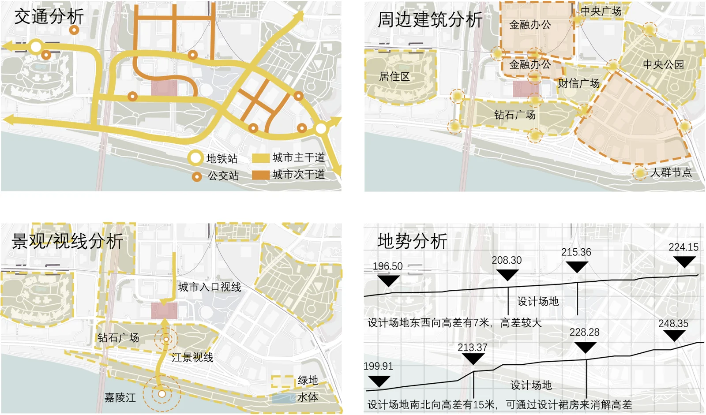
核心策略
以「核心筒—钢悬挂」结构体系让塔楼悬浮于基座之上，释放地面层形成通往江岸的公共通廊。三段桁架（低区 3—9F、中区 11—17F、高区 21—28F）吊挂塔楼，每段之间嵌入两层通高的无柱空中花园，把垂直绿化从屋顶一直延伸到地面。智能幕墙、屋顶光伏与雨水回收整合成同一套节能表皮。
设计关键词：悬浮 · 通高花园 · 垂直生态
建筑不是封闭的体量，而是三组被钢桁架托起的「空中盒子」——盒子之间是花园，盒子内部是办公，盒子下方是城市。阳光与江风穿透建筑，公共空间从地面一直延伸到天空。
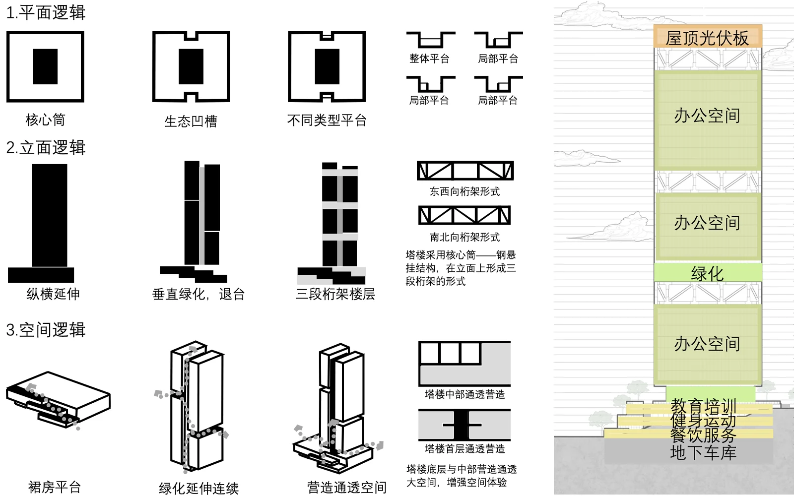
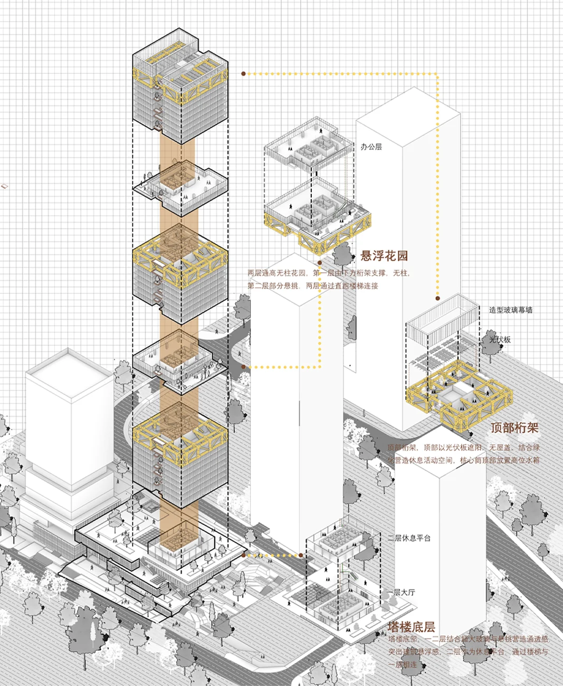
场地设计与总平面
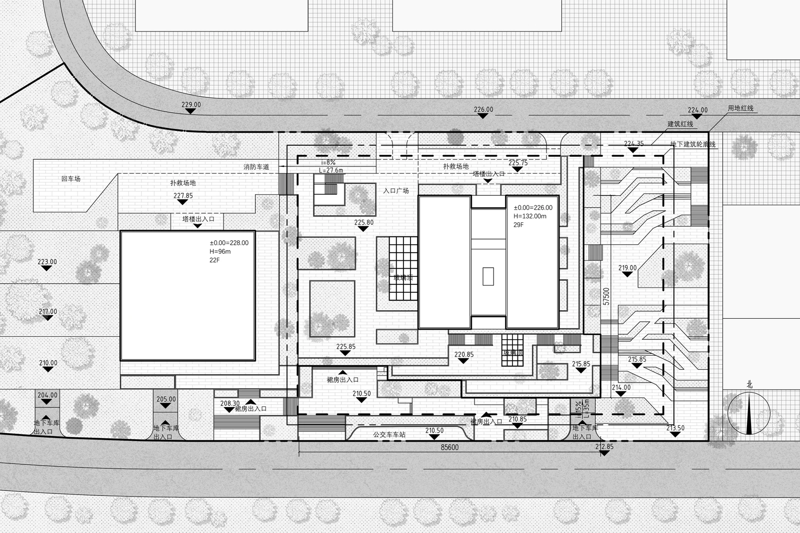
体块生成与空间逻辑
平面上核心筒居中，生态凹槽沿东西两侧切入；立面上从纵横延伸到垂直绿化退台，最终收成三段桁架层；空间上裙房平台、绿化延伸带、通透中庭三层贯通，把地面的公共空间引进建筑内部。
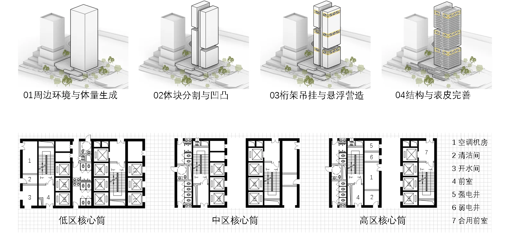
垂直生态与绿建技术
垂直绿化分四级：屋顶桁架绿化 → 悬浮花园 → 桁架平台绿化 → 底部绿化引入，从制高点到地面连续贯通。雨水经初步净化与中水净化后用于灌溉、清洁与冲厕；屋顶光伏补充能耗；智能幕墙夏季白天遮阳通风、夜间散热降温，表皮自己会调节气候。
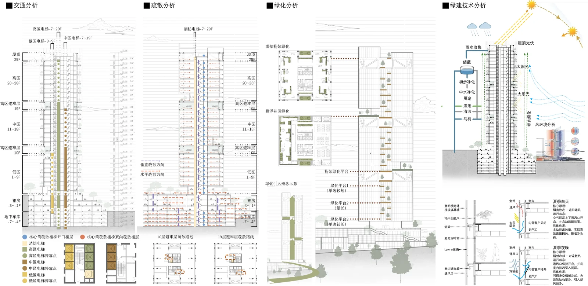
结构体系与空间呈现
核心筒—钢桁架悬挂体系：箱型钢与 H 型钢共同作用吊挂上部塔楼，地下车库采用 1000×1000 柱网框架。三段桁架对应三段办公楼层，桁架之间是无柱的两层通高花园——桁架本身成为空间景观，而不是被藏起来的构件。
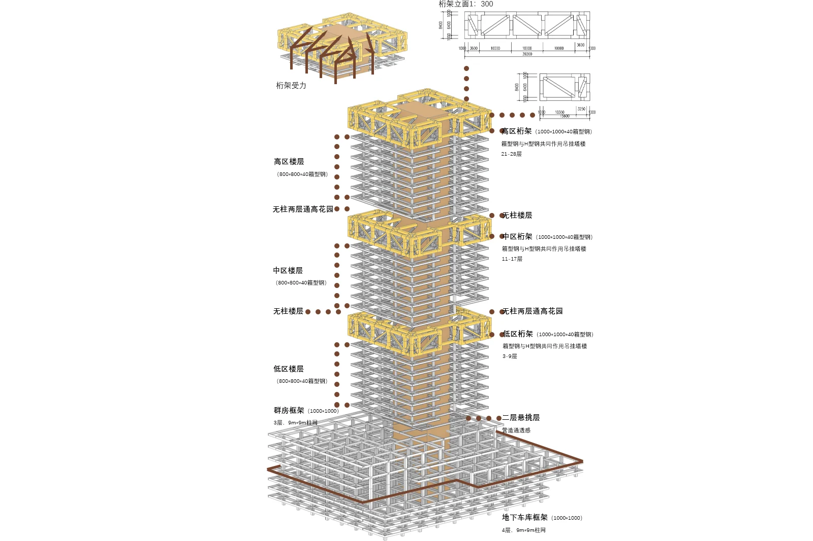
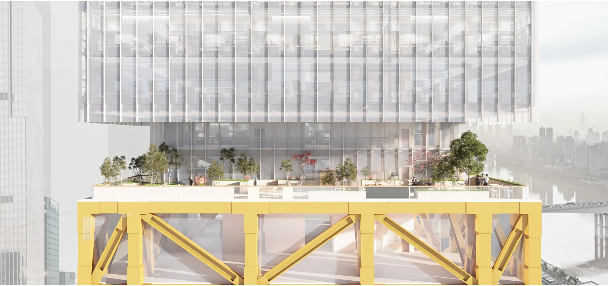
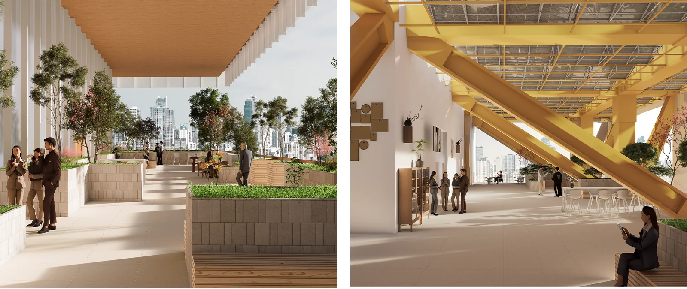
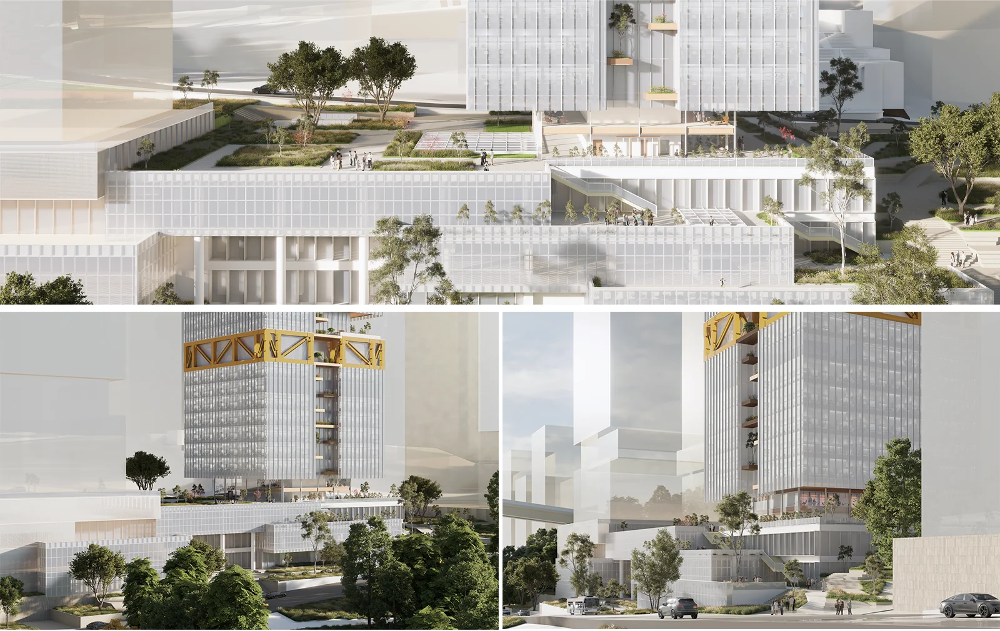